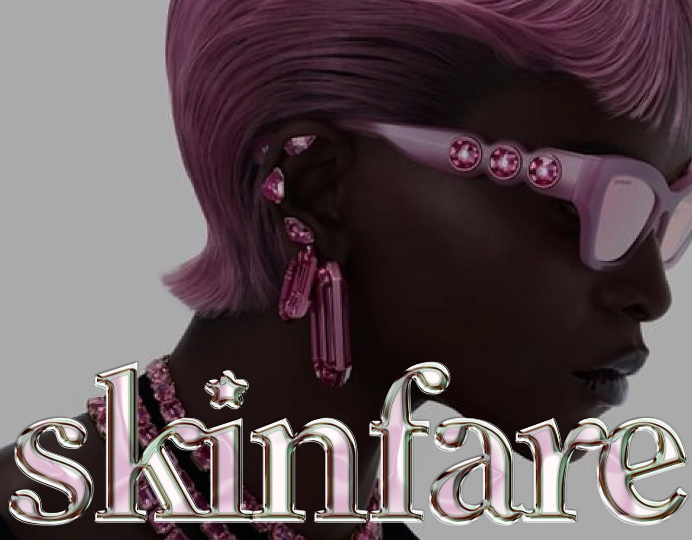
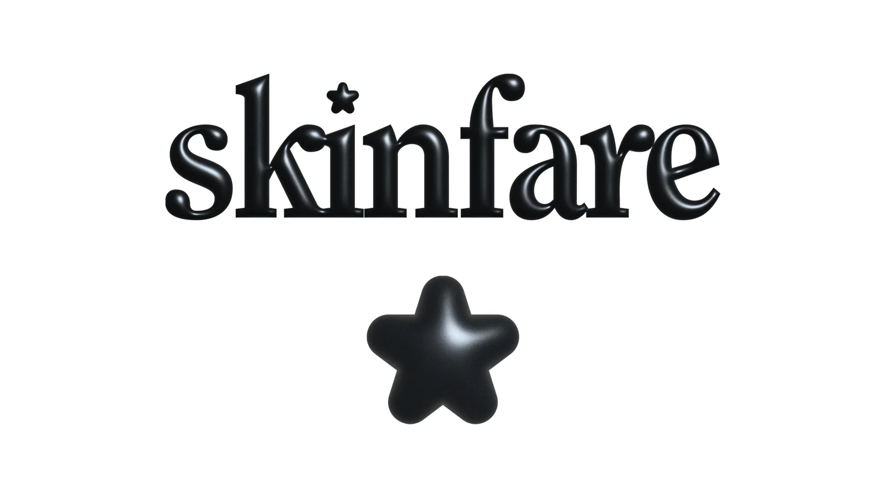
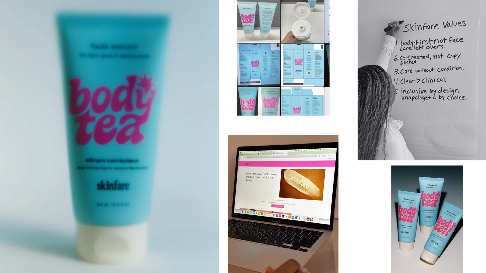
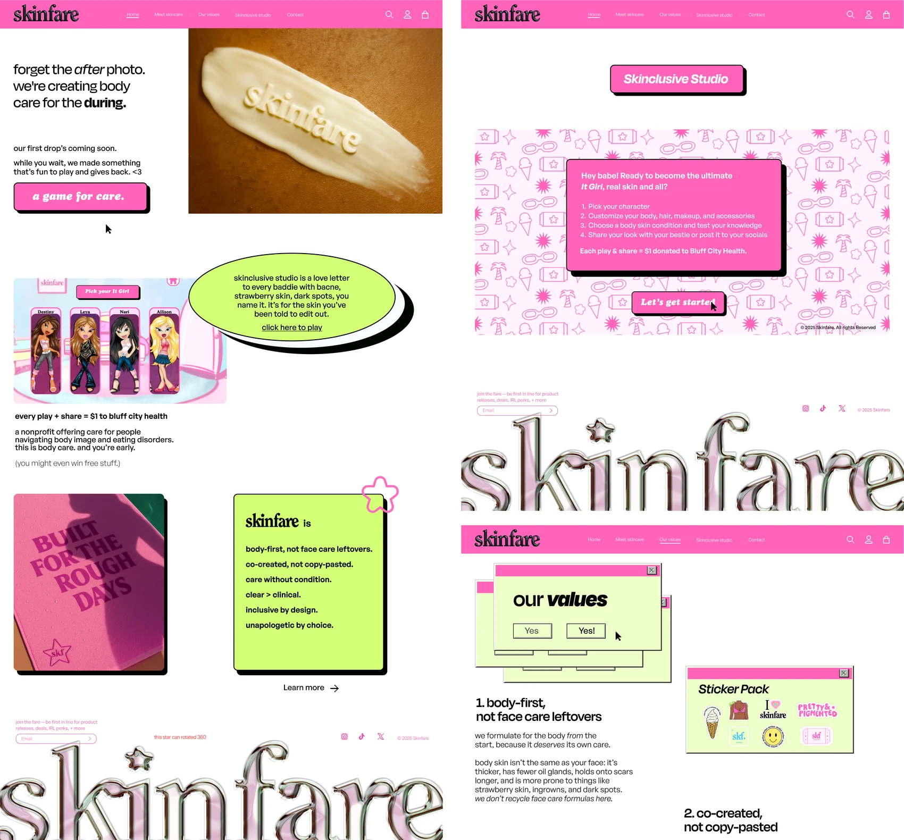

SKINFARE - визуальная айдентика бьюти-бренда

FIG. 07.0О проекте
Визуальная айдентика Skinfare - смелого и ироничного бьюти-бренда про самовыражение и про то, как хорошо чувствовать себя в собственной коже.
Язык бренда собран на стыке ностальгии по Y2K и откровенно розовой энергии. Ежедневный уход перестает быть рутиной и превращается в радостный ритуал, а индивидуальность показана такой, какая она есть - идеальной в своей неидеальности.

FIG. 07.1
FIG. 07.2
FIG. 07.3Сделано
Логотип, хромированная типографика и фирменная звезда · упаковка body tea и fade serum, коробки и развертки · цветовая система и Y2K-графика · сайт бренда и интерактивный Skinclusive Studio · ценности бренда и стикерпак.